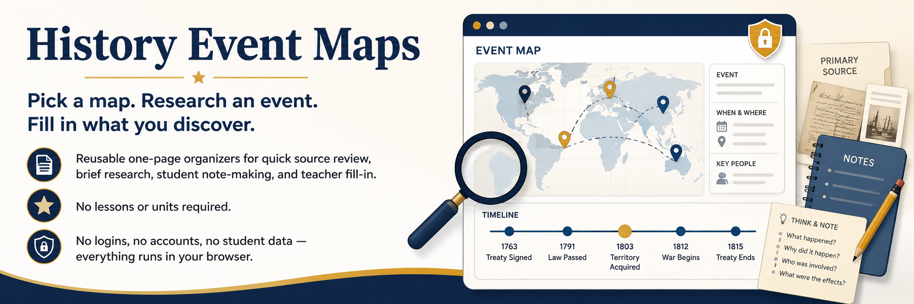

History Event Maps
Pick a map. Research an event. Fill in what you discover.
Reusable one-page organizers for quick source review, brief research, student note-making, and teacher fill-in. No lessons or units required.
No logins, no accounts, no student data — everything runs in your browser.
Aligned to the current 2022-adopted Texas Social Studies TEKS implemented beginning in 2024-2025.
Download the whole library
Every map in one file — print-ready PDF or editable PowerPoint, in the language you selected.
Designed for US Letter landscape printing.